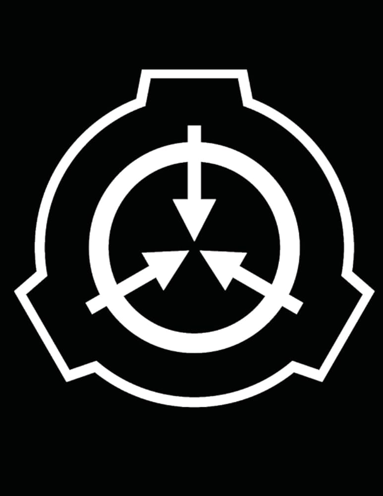

Questa pagina è stata creata da Gatto Intercom, contiene: livelli di autorizzazioni, Classificazione del Personale, squadre MTF, Gruppi di Interesse, Classi S.C.P. e S.C.P. ...provenienti tutti dalla SCP WIKI.

Proseguendo potrai scoprire le informazioni fondamentali delle categorie precedenti.
Mobile Task Forces - Principali
Gruppi di Interesse - Principali
Serie S.C.P.